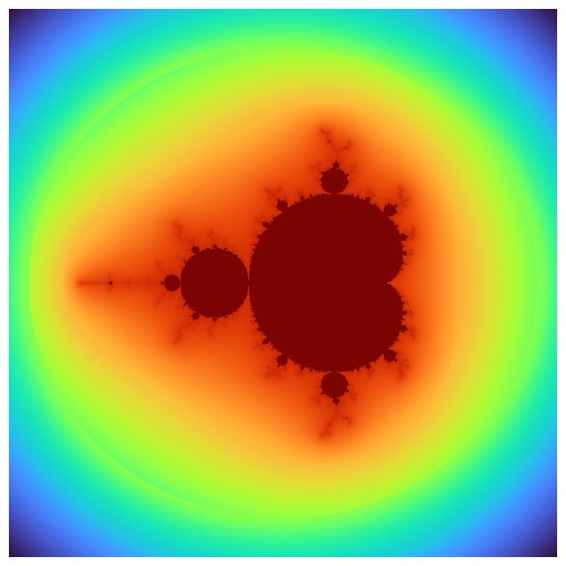
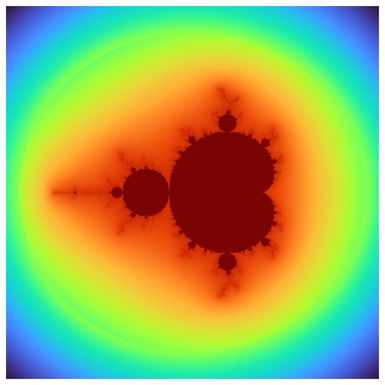
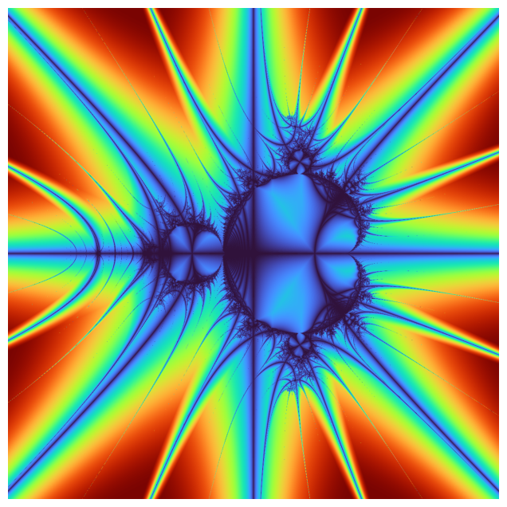

m = Mandelbrot(order=2)
m.resolution = 600, 600
m.max_iter = 200
a = m.render()
m.equalize_histogram()
m.plot()OMP: Info #276: omp_set_nested routine deprecated, please use omp_set_max_active_levels instead.
Fractal (width:int=1200, height:int=1200)
Abstract base class for generating fractal images.
compute_roots_of_unity (order)
newton_derivative_fn (zr, zi, cr, ci, order)
Compute f’(z) = order z^(order - 1) where z = zr + i zi
Returns: (dr, di) real and imaginary parts of f’(z)*
newton_fn (zr, zi, cr, ci, order)
*Compute f(z) = z^order - 1 where z = zr + i zi
Returns: (fr, fi) real and imaginary parts of f(z)*
newton_step (zr, zi, cr, ci, order, fractal_fn, fractal_derivative_fn)
Perform one Newton iteration step on complex z = zr + izi: z_next = z - f(z) / f’(z)
Parameters: zr, zi : float - real and imaginary parts of current z cr, ci : float - parameters (e.g., constants in fractal) order : int - order of fractal fractal_fn : function - f(z), returns (fr, fi) fractal_derivative_fn : function - f’(z), returns (dr, di)
Returns: (zr_next, zi_next): next iteration complex number*
cross_dist (zr:float, zi:float)
julia_step (zr, zi, cr, ci)
mandelbrot_step (zr, zi, cr, ci, n)
mandelbrot_step_n (zr, zi, cr, ci, n)
mandelbrot_step_5 (zr, zi, cr, ci)
mandelbrot_step_4 (zr, zi, cr, ci)
mandelbrot_step_3 (zr, zi, cr, ci)
mandelbrot_step_1 (zr, zi, cr, ci)
smooth_coloring (zr, zi, iteration)
Mandelbrot (x_min:float=-2.5, x_max:float=1.5, y_min:float=-2.0, y_max:float=2.0, width:int=600, height:int=600, max_iter:int=200, order:int=2)
Abstract base class for generating fractal images.
OMP: Info #276: omp_set_nested routine deprecated, please use omp_set_max_active_levels instead.
MandelbrotCrossTrap (x_min:float=-2.5, x_max:float=1.5, y_min:float=-2.0, y_max:float=2.0, width:int=600, height:int=600, max_iter:int=200, order:int=2)
Abstract base class for generating fractal images.

@njit(parallel=True)
def _compute_newton(x_min, x_max, y_min, y_max, resolution, max_iter, order, fractal_fn, fractal_derivative_fn):
width, height = resolution
result = np.zeros((height, width), dtype=np.int32)
dx = (x_max - x_min) / (width - 1)
dy = (y_max - y_min) / (height - 1)
roots_real, roots_imag = compute_roots_of_unity(order)
for j in prange(height):
zy = y_min + j * dy
for i in range(width):
zx = x_min + i * dx
zr, zi = zx, zy
converged = False
for iteration in range(max_iter):
# fractal_fn and fractal_derivative_fn assumed njit and defined elsewhere
fr, fi = fractal_fn(zr, zi, 0.0, 0.0, order)
dr, di = fractal_derivative_fn(zr, zi, 0.0, 0.0, order)
denom = dr*dr + di*di
if denom == 0.0:
break
real_part = (fr*dr + fi*di) / denom
imag_part = (fi*dr - fr*di) / denom
zr -= real_part
zi -= imag_part
# Check convergence to any root
for root_index in range(order):
dist = (zr - roots_real[root_index])**2 + (zi - roots_imag[root_index])**2
if dist < 1e-6:
result[j, i] = root_index + 1
converged = True
break
if converged:
break
return resultNewton (x_min:float=-2.0, x_max:float=2.0, y_min:float=-2.0, y_max:float=2.0, width:int=600, height:int=600, max_iter:int=200, order:int=3)
Abstract base class for generating fractal images.
##| export
#@njit(parallel=True, fastmath=True)
#def _compute_mandelbrot(x_min: float, x_max: float, y_min: float, y_max: float, width: int, height: int, max_iter: int) -> np.ndarray:
# # Allocate with float32 to halve memory bandwidth (optional)
# result = np.zeros((height, width), dtype=np.float32)
#
# dx = (x_max - x_min) / (width - 1)
# dy = (y_max - y_min) / (height - 1)
#
# inv_log2 = 1.0 / math.log(2.0) # for nu calculation
# r2_cut = max(abs(x_max), abs(x_min)) * max(abs(x_max), abs(x_min)) + max(abs(y_max), abs(y_min)) * max(abs(y_max), abs(y_min))
#
# for j in prange(height):
# zy = y_min + j * dy
# for i in range(width):
# zx = x_min + i * dx
# zr = 0.0
# zi = 0.0
# cr = zx
# ci = zy
# iteration = 0
#
# # Mandelbrot iteration
# while zr * zr + zi * zi <= r2_cut and iteration < max_iter:
# # TODO : use zr * zr + zi * zi <= 4 and iteration < max_iter for classical fractal calculation without orbit traps
# # (zr + i zi)^2 + c
# zr2 = zr * zr - zi * zi + cr
# zi = 2.0 * zr * zi + ci
# zr = zr2
# iteration += 1
#
# if iteration < max_iter:
# mag_sq = zr * zr + zi * zi
# if mag_sq > 0.0:
# log_zn = 0.5 * math.log(mag_sq)
# if log_zn > 0.0:
# nu = math.log(log_zn * inv_log2) * inv_log2
# result[j, i] = iteration + 1 - nu
# else:
# result[j, i] = iteration
# else:
# result[j, i] = iteration
# else:
# result[j, i] = iteration
#
# return result
#
#class Mandelbrot(Fractal):
# def compute(self) -> np.ndarray:
# w, h = self.resolution
# # pass resolution-consistent dims
# return _compute_mandelbrot(self._x_min, self._x_max, self._y_min, self._y_max, w, h, self._max_iter)##| export
#@njit(parallel=True, fastmath=True)
#def _compute_mandelbrot_cross_trap(x_min: float, x_max: float, y_min: float, y_max: float, width: int, height: int, max_iter: int) -> np.ndarray:
# # Allocate with float32 to halve memory bandwidth (optional)
# cross_trap = np.zeros((height, width), dtype=np.float32)
#
# dx = (x_max - x_min) / (width - 1)
# dy = (y_max - y_min) / (height - 1)
#
# inv_log2 = 1.0 / math.log(2.0) # for nu calculation
#
# for j in prange(height):
# zy = y_min + j * dy
# for i in range(width):
# zx = x_min + i * dx
# zr = 0.0
# zi = 0.0
# cr = zx
# ci = zy
# iteration = 0
# min_cross = 1e10
#
# # Mandelbrot iteration
# while iteration < max_iter:
# # TODO : use zr * zr + zi * zi <= 4 and iteration < max_iter for classical fractal calculation without orbit traps
# # (zr + i zi)^2 + c
# zr2 = zr * zr - zi * zi + cr
# zi = 2.0 * zr * zi + ci
# zr = zr2
# iteration += 1
#
# # Cross trap: distance to real or imaginary axis
# # TOTO : only take the min after a specific number of iterations , e. g. iteration > 3:
# if iteration > 2:
# cross_dist = min(abs(zr), abs(zi))
# if (cross_dist < min_cross):
# min_cross = cross_dist
#
# cross_trap[j, i] = min_cross
#
# return cross_trap
#
#class MandelbrotCrossTrap(Fractal):
# def compute(self) -> np.ndarray:
# w, h = self.resolution
# # pass resolution-consistent dims
# return _compute_mandelbrot_cross_trap(self._x_min, self._x_max, self._y_min, self._y_max, w, h, self._max_iter)##| export
#@njit(parallel=True, fastmath=True)
#def _compute_julia_set(xmin, xmax, ymin, ymax, width, height, cr, ci, max_iter):
# dx = (xmax - xmin) / (width - 1)
# dy = (ymax - ymin) / (height - 1)
# result = np.zeros((height, width), dtype=np.float32)
#
# for j in prange(height):
# y0 = ymin + j * dy
# for i in range(width):
# x0 = xmin + i * dx
# x = x0
# y = y0
# iteration = 0
# while x*x + y*y <= 6.25 and iteration < max_iter:
# x_temp = x*x - y*y + cr
# y = 2.0 * x * y + ci
# x = x_temp
# iteration += 1
#
# if iteration < max_iter:
# # Smooth coloring
# modulus_sq = x*x + y*y
# log_zn = np.log(modulus_sq) / 2
# nu = np.log(log_zn / np.log(2)) / np.log(2)
# result[j, i] = iteration + 1 - nu
# else:
# result[j, i] = max_iter
#
# return result
#
#class Julia(Fractal):
# def __init__(
# self,
# cr: float = -0.7,
# ci: float = 0.27015,
# width: int = 800,
# height: int = 800,
# x_min: float = -1.5, # override Fractal default
# x_max: float = 1.5, # override Fractal default
# y_min: float = -1.5, # keep same (or change)
# y_max: float = 1.5, # keep same (or change)
# max_iter: int = 1000, # keep same (or change)
# ):
# # 1) initialize the Fractal portion:
# super().__init__(width, height, x_min, x_max, y_min, y_max, max_iter)
#
# # 2) store Julia‐specific constants
# self._cr = cr
# self._ci = ci
#
# def compute(self) -> np.ndarray:
# w, h = self.resolution
# # pass resolution-consistent dims
# return _compute_julia_set(self._x_min, self._x_max, self._y_min, self._y_max, w, h, self._cr, self._ci, self._max_iter)##| export
#@njit(parallel=True, fastmath=True)
#def _compute_julia_cross_trap(xmin, xmax, ymin, ymax, width, height, cr, ci, max_iter):
# dx = (xmax - xmin) / (width - 1)
# dy = (ymax - ymin) / (height - 1)
# cross_trap = np.zeros((height, width), dtype=np.float32)
#
# for j in prange(height):
# y0 = ymin + j * dy
# for i in range(width):
# x0 = xmin + i * dx
# x = x0
# y = y0
# iteration = 0
# min_cross = 1e10
#
# while iteration < max_iter:
# x_temp = x*x - y*y + cr
# y = 2.0 * x * y + ci
# x = x_temp
# iteration += 1
#
# # Cross trap: distance to real or imaginary axis
# # TOTO : only take the min after a specific number of iterations , e. g. iteration > 3:
# if iteration > -1:
# cross_dist = min(abs(x), abs(y))
# if (cross_dist < min_cross):
# min_cross = cross_dist
#
# cross_trap[j, i] = min_cross
#
# return cross_trap
#
#class JuliaCrossTrap(Fractal):
# def __init__(
# self,
# cr: float = -0.7,
# ci: float = 0.27015,
# width: int = 800,
# height: int = 800,
# x_min: float = -1.5, # override Fractal default
# x_max: float = 1.5, # override Fractal default
# y_min: float = -1.5, # keep same (or change)
# y_max: float = 1.5, # keep same (or change)
# max_iter: int = 1000, # keep same (or change)
# ):
# # 1) initialize the Fractal portion:
# super().__init__(width, height, x_min, x_max, y_min, y_max, max_iter)
#
# # 2) store Julia‐specific constants
# self._cr = cr
# self._ci = ci
#
# def compute(self) -> np.ndarray:
# w, h = self.resolution
# # pass resolution-consistent dims
# return _compute_julia_cross_trap(self._x_min, self._x_max, self._y_min, self._y_max, w, h, self._cr, self._ci, self._max_iter)#m = MandelbrotCrossTrap()
#m.resolution = 1200, 1200
#m.max_iter = 3000
#
##m.set_zoom(5, (-0.170337,-1.06506))
##m.set_zoom(25, (-0.170337,-1.06506))
##m.set_zoom(125, (-0.170337,-1.06506))
##m.set_zoom(625, (-0.170337,-1.06506))
##m.set_zoom(3125, (-0.170337,-1.06506))
##m.set_zoom(15625, (-0.170337,-1.06506))
##m.set_zoom(78125, (-0.170337,-1.06506))
#
##m.set_zoom(5, (0.42884,-0.231345))
##m.set_zoom(25, (0.42884,-0.231345))
#m.set_zoom(125, (0.42884,-0.231345))
##m.set_zoom(625, (0.42884,-0.231345))
##m.set_zoom(3125, (0.42884,-0.231345))
##m.set_zoom(15625, (0.42884,-0.231345))
##m.set_zoom(78125, (0.42884,-0.231345))
#
##m.set_zoom(5, (-1.62917,-0.0203968))
##m.set_zoom(25, (-1.62917,-0.0203968))
##m.set_zoom(125, (-1.62917,-0.0203968))
##m.set_zoom(625, (-1.62917,-0.0203968))
##m.set_zoom(3125, (-1.62917,-0.0203968))
##m.set_zoom(15625, (-1.62917,-0.0203968))
##m.set_zoom(78125, (-1.62917,-0.0203968))
#
##m.set_zoom(5, (-0.761574,-0.0847596))
##m.set_zoom(25, (-0.761574,-0.0847596))
##m.set_zoom(125, (-0.761574,-0.0847596))
##m.set_zoom(625, (-0.761574,-0.0847596))
##m.set_zoom(3125, (-0.761574,-0.0847596))
##m.set_zoom(15625, (-0.761574,-0.0847596))
##m.set_zoom(78125, (-0.761574,-0.0847596))
#
#m.render()
#m.equalize_histogram()
#m.plot()